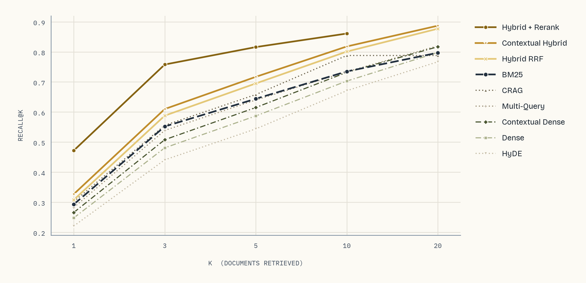
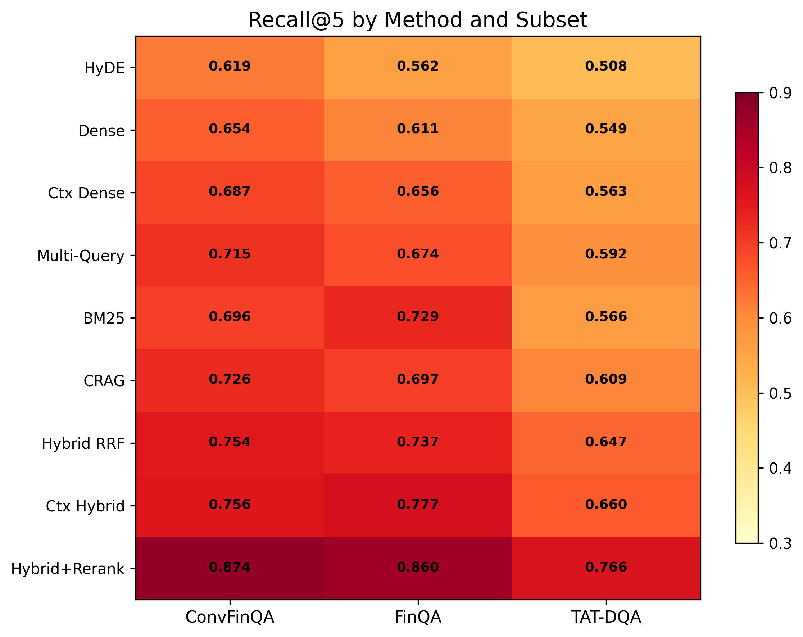
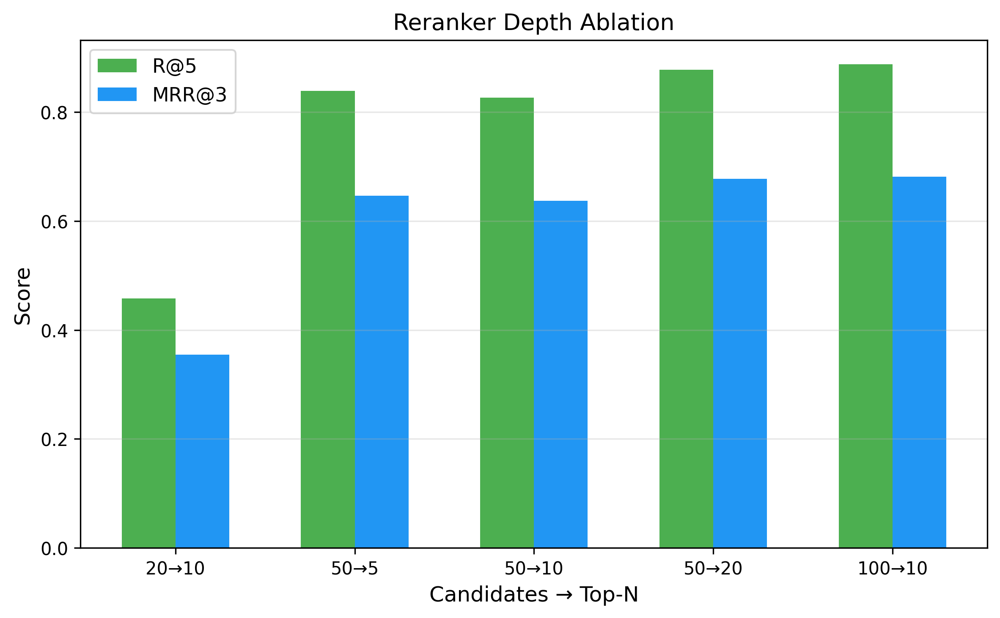

Ranked by Recall@5
What actually retrieves best
Nine strategies over the full T²-RAGBench test set: 23,088 queries, 7,318 documents of mixed text and tables. Bar colour is the retrieval signal each method uses.
- Lexical signal
- Semantic signal
- Both, fused
- Query-side or adaptive
A tenth strategy, convex-combination fusion at α = 0.5, reaches .726 and is evaluated in the fusion ablation rather than the main table. All pairwise differences between adjacent methods are significant at p < 0.001, paired bootstrap with B = 10,000 and Bonferroni correction.
Reranking is the single most impactful stage
Adding a cross-encoder to hybrid retrieval moves Recall@5 from .695 to .816 and MRR@3 from .433 to .605. Nothing else in the study comes close, and at 300K tokens per minute the full 23K-query benchmark reranks in about an hour.
Lexical matching is not obsolete here
Financial documents carry company names, ticker symbols and standardised metric labels verbatim in both query and document. Dense retrieval only draws level at Recall@20. Rank your benchmarks on your own domain — MTEB and BEIR do not predict this.
Tables, not text, are what break retrieval
Of 100 sampled failures, 73 are table structure mismatches: the answer sits in a markdown table whose rows and headers do not embed as continuous text. A further 20 need arithmetic rather than lookup.
Abstract
What the paper does
Retrieval-Augmented Generation systems critically depend on retrieval quality, yet no systematic comparison of modern retrieval methods exists for heterogeneous documents containing both text and tabular data. We benchmark ten retrieval strategies spanning sparse, dense, hybrid fusion, cross-encoder reranking, query expansion, index augmentation and adaptive retrieval on a challenging financial QA benchmark of 23,088 queries over 7,318 documents with mixed text-and-table content.
We evaluate retrieval quality via Recall@k, MRR and nDCG, and end-to-end generation quality via Number Match, with paired bootstrap significance testing. Query expansion methods and adaptive retrieval provide limited benefit for precise numerical queries, while contextual retrieval yields consistent gains. We provide ablation studies on fusion methods and reranker depth, actionable cost-accuracy recommendations, and release our full benchmark code.
Evidence
Figures



If you are building one of these
Where to start
- Start with hybrid retrieval.BM25 and dense, fused with reciprocal rank fusion. Treat it as the minimum viable baseline rather than an optimisation.
- Add a cross-encoder reranker.The largest single improvement available, and worth its latency. Give it at least 50 candidates or it has nothing to work with.
- Apply contextual retrieval at indexing time.Prepending a generated summary to each document is a one-time cost that pays back consistently across both dense and hybrid pipelines.
- Avoid HyDE for numerical or entity-centric queries.It underperforms plain dense retrieval here. Generated pseudo-documents invent plausible but wrong figures, which pulls the query embedding away from the real answer.
- Evaluate on your own domain.MTEB and BEIR rankings did not predict retrieval performance on these documents. The one result that transfers is that you have to measure.
Full results
All methods, all metrics
T²-RAGBench, 23,088 queries over 7,318 documents. Sorted by nDCG@10.
| Method | R@1 | R@3 | R@5 | R@10 | R@20 | MRR@3 | MRR@5 | nDCG@5 | nDCG@10 | MAP |
|---|---|---|---|---|---|---|---|---|---|---|
| HyDE | .221 | .441 | .544 | .671 | .767 | .318 | .341 | .392 | .433 | .365 |
| Dense | .248 | .481 | .587 | .703 | .798 | .351 | .375 | .428 | .466 | .398 |
| Contextual Dense | .266 | .508 | .615 | .732 | .817 | .373 | .398 | .452 | .490 | .420 |
| Multi-Query | .283 | .539 | .640 | .734 | .820 | .397 | .420 | .475 | .506 | .439 |
| BM25 | .293 | .552 | .644 | .735 | .797 | .411 | .432 | .485 | .515 | .449 |
| CRAG | .302 | .556 | .658 | .788 | .788 | .415 | .439 | .493 | .536 | .456 |
| Hybrid RRF | .308 | .588 | .695 | .801 | .877 | .433 | .457 | .517 | .551 | .477 |
| Contextual Hybrid | .327 | .610 | .717 | .818 | .887 | .454 | .478 | .538 | .571 | .497 |
| Hybrid + Rerank | .472 | .758 | .816 | .861 | — | .605 | .618 | .669 | .683 | .625 |
Hybrid + Rerank returns at most 10 documents, so R@20 does not apply. Better retrieval carries through to answers: end-to-end Number Match rises from .251 with BM25 to .282 with hybrid fusion against an oracle-context ceiling of .350, and correlates with Recall@5 at r > 0.99.
Citation
Cite this work
@article{akarsu2026bm25,
title = {From BM25 to Corrective RAG: Benchmarking Retrieval
Strategies for Text-and-Table Documents},
author = {Akarsu, Meftun and Karaman, Recep Kaan and
Mierbach, Christopher},
journal = {arXiv preprint arXiv:2604.01733},
year = {2026},
doi = {10.48550/arXiv.2604.01733},
url = {https://arxiv.org/abs/2604.01733}
}